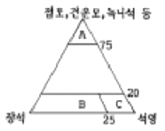
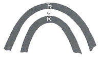
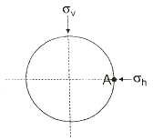
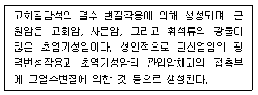

응용지질기사 (2011-03-20 기출문제)
1과목: 암석학 및 광물학
1. 다음 중 흑요암(obsidian)과 화학적 성분이 유사한 암석은?
- 유문암
- 현무암
- 대리암
- 규암
(정답률: 60%)

2. 변성작용시 넓은 지역에 걸쳐 화학적 재결정작용 외에도 차등응력과 심한 역학적 변형으로 뚜렷한 엽리구조를 발달시키는 변성작용은?
- 접촉변성작용
- 매몰변성작용
- 광역변성작용
- 파쇄변성작용
(정답률: 67%)
3. 다음 중 큰 결정들과 그들 사이를 메우는 작은 결정들 또는 유리질로 되어 있는 화성암의 조직은?
- 문상조직
- 반상조직
- 유리질조직
- 포이킬리틱조직
(정답률: 70%)
4. 다음 중 화학적 퇴적암인 쳐트(Chert)에 대한 설명으로 옳지 않은 것은?
- 규질의 화학적 침전물로서 치밀하고 굳은 암석이며, SiO2의 함량은 50%에 달한다.
- 쳐트 중 지층을 이룬 것이 층상 쳐트이고 석회암 중에 불규칙한 모양으로 층상을 보이지 않는 것은 단괴상 쳐트이다.
- 층상 쳐트에는 적색인 것과 담청색인 것이 있다.
- 쳐트는 수석 또는 각암이라고 불린다.
(정답률: 58%)
5. 다음 그림은 어떤 퇴적암의 광물성분 관계를 나타낸 그림이다. 그림에서 B에 속하는 암석명은?

- 셰일
- 석영사암
- 그레이와케(graywacke)
- 아르코스(arkose)
(정답률: 84%)
6. 다음 중 가장 고온에서 형성되는 변성상은?
- 그래뉼라이트상
- 청색편암상
- 녹색편암상
- 각섬암상
(정답률: 60%)
7. 석영이 10% 미만이며, 유색광물은 주로 흑운모, 각섬석, 휘석 등이고, 장석은 An50 이상인 회사장석으로 주로 구성된 심성암은?
- 토날라이트(tonalite)
- 반려암(gabbro)
- 섬록암(diorite)
- 몬조니암(monzonite)
(정답률: 56%)
8. 셰일이 광역변성작용을 받은 변성암에서 발견되는 광물들 중에서 변성도가 가장 높은 환경을 지시하는 광물은?
- 흑운모
- 규선석
- 석류석
- 녹니석
(정답률: 80%)
9. 마그마는 일반적으로 현무암질, 안산암질, 유문암질로 구분한다. 이러한 구분의 기준이 되며 마그마에 가장 풍부하게 함유된 성분은 무엇인가?
- Al2O3
- K2O
- Fe2O3
- SiO2
(정답률: 80%)
10. 다음 중 퇴적암에 대한 일반적인 설명으로 옳지 않은 것은?
- 육지 표면에 분포되어 있는 암석의 75%는 퇴적암 및 변성퇴적암으로 되어 있다.
- 육상에 분포한 퇴적암층의 평균 두께는 약 10km이다.
- 퇴적암은 천연가스, 석유, 철광층과 화석을 포함한다.
- 퇴적암은 지표에 노출된 암석이 풍화, 침식, 운반, 퇴적, 고화 작용을 받아 형성된다.
(정답률: 75%)
11. 다음 중 먼저 존재하던 결정면 상에 다른 광물이 일정한 방위 관계를 유지하면서 성장하는 현상을 무엇이라 하는가?
- 인터그로스
- 쌍정
- 고용체
- 에피탁시
(정답률: 45%)
12. 석영의 박편을 편광현미경 재물대에 올려놓고 직교니콜 하에서 360° 회전하면 몇 번의 소광 현상이 일어나는가?
- 0회
- 2회
- 3회
- 4회
(정답률: 74%)
13. 배위수(C.N.)가 6인 광물에서 음이온에 대한 양이온의 반지름의 범위는?
- 0.156-0.225
- 0.225-0.414
- 0.414-0.732
- 0.732-1.000
(정답률: 57%)
14. 바이스 기호(Weiss symbol)가 {∞a : 1b : 3c}인 면의 밀러지수(Miller index)는?
- (0 3 1)
- (0 1 3)
- (∞ 1 3)
- (∞ 3 1)
(정답률: 58%)
15. 다음 중 동일한 결정구조를 가진 광물들의 성질에 관한 다음 설명 중에서 옳지 않은 것은?
- 구성원자의 크기가 클수록 경도가 높다.
- 구성원자의 원자량이 클수록 비중이 크다.
- 구성원자의 비중이 클수록 경도가 높다.
- 구성원자의 크기가 클수록 단위포의 크기가 크다.
(정답률: 63%)
16. 다음 중 단파 자외선을 흡수하여 청백색의 형광을 발하는 광물은?
- 남정석
- 회중석
- 사파이어
- 석류석
(정답률: 74%)
17. 광물 결정내에 생성된 피션트랙은 다음 중 어느 것에 기인되는가?
- 미세한 벽개면의 연속
- 단구의 생성에 수반된 자국
- 방사성 원소의 붕괴
- 불순물의 용리
(정답률: 82%)
18. 다음 중 색과 조흔색이 모두 흑색인 광물은?
- 적철석
- 갈철석
- 자철석
- 휘수연석
(정답률: 74%)
19. 광물의 발색소(chromophore)와 색깔이 잘못 연결된 것은?
- Cr3+ - 녹색
- Cu2+ - 청색
- Ti3+ - 황록색
- Mn2+ - 담홍색
(정답률: 58%)
20. 광물의 온도 상승에 따른 흡열반응과 발열반응의 온도와 그 강도를 측정하는 분석법은 무엇인가?
- 시차열분석
- 열중량분석
- 시차주사열용량분석
- 적외선흡수분광분석
(정답률: 82%)
2과목: 구조지질학
21. 캘리포니아 산안드레아스 단층은 어떤 종류의 판 경계부인가?
- 발산경계
- 수렴경계
- 변환단층경계
- 충돌경계
(정답률: 85%)
22. 지진과 지진파에 대한 다음 설명 중 맞는 것은?
- 암석의 밀도가 증가하면 지진파의 속도도 증가한다.
- 대륙의 단층을 따라 발생한 지진은 지진해일을 일으킨다.
- 지진파 중 S파의 속도가 가장 느리다.
- 지진해일의 진행속도는 시간당 300km를 넘지 못한다.
(정답률: 82%)
23. 다음 중 카르스트 지형과 가장 관련이 없는 도시는?
- 단양
- 영월
- 춘천
- 제천
(정답률: 72%)
24. 다음 중 유수의 하각작용(down cutting)에 해당하지 않는 것은 어느 것인가?
- 뜯어내기 작용
- 마식작용
- 용해작용
- 포행작용
(정답률: 75%)
25. 층리면이 습곡되어 있을 때 축면엽리와 지층면이 만나서 형성된 지질구조는?
- 신장된 선구조(elongation lineation)
- 교선 선구조 혹은 교차 선구조(intersection lineation)
- 파랑습곡 선구조(creunlation lineation)
- 부딘 선구조(boudinage lineation)
(정답률: 64%)
26. 해양판이 맨틀로 하강하는 섭입대(subduction zone)에서 약 700km 깊이까지 심발지진의 발생이 가능한 원인은?
- 각섬암-에클로자이트 상전이
- 섭입되는 해양판의 부분용융
- 고압변성작용
- 차가운 해양판의 섭입으로 인한 낮은 저온구배
(정답률: 80%)
27. 모어 포락선이 직선이라고 가정할 때, 쿨롱계수(Coulomb coefficient)가 1인 암석에 응력이 가해졌을 때, 최대주응력과 전단면이 이루는 각도는 얼마인가?
- 22.5°
- 30°
- 45°
- 67.5°
(정답률: 44%)
28. 다음 중 신장절리(extension joint)의 특징으로 볼 수 없는 것은?
- 절리간격이 비교적 일정하다.
- 공액상(conjugate)으로 발달한다.
- 절리면이 거칠고 암질에 따라 발달 정도가 다르다.
- 경사가 수직에 가깝고 연장성이 양호하다.
(정답률: 68%)
29. 다음 중 하곡의 발달에 영향을 미치는 요소가 아닌 것은?
- 사면 경사의 점도
- 강수량을 좌우하는 기후
- 침식에 대한 저항성을 규정하는 지질구조
- 퇴적물의 공급방향
(정답률: 75%)
30. 다음 중 대륙이동에 관련된 학설 또는 이론의 발전 과정을 옳게 나열한 것은?
- 대륙표이설 - 해저확장설 - 판구조론
- 해저확장설 - 대륙표이설 - 판구조론
- 대륙표이설 - 판구조론 - 해저확장설
- 해저확장설 - 판구조론 - 대륙표이설
(정답률: 75%)
31. 다음 그림을 설명하는 용어 중 맞는 것은? (단, TA, J, K는 각각 지질시대를 나타내는 약자이며, 순서대로 Triassic, Jurassic, Cretaceous를 의미한다.](오류 신고가 접수된 문제입니다. 반드시 정답과 해설을 확인하시기 바랍니다.)

- 배사(anticline)
- 향사형 배사(synformal anticline)
- 향사(syncline)
- 배사형 향사(antiformal syncline)
(정답률: 29%)
32. 대륙지각에서 암석의 강도(strength)가 가장 큰 부분은?
- 취성영역(brittle regime)의 중간부
- 연성영역(ductile regime)의 최하부
- 연성영역의 중간부
- 취성-연선 전이대
(정답률: 60%)
33. 한반도의 선캠브리아누대에 속하는 지질단위가 아닌 것은?
- 경기변성암복합체
- 대석회암층군
- 율리층군
- 낭림누층군
(정답률: 64%)
34. 다음 중 지질사건과 발생(형성)시대의 연결로 옳지 않은 것은?
- 불국사화강암관입 - 중생대 백악기
- 대보조산운동 - 중생대 쥐라기
- 동해열림 - 신생대 제3기
- 포항분지형성 - 신생대 제4기
(정답률: 44%)
35. 다음 중 선구조(lineation)에 해당하지 않는 것은?
- 단층조선
- 멀리언 구조
- 엽리 구조
- 부딘 구조
(정답률: 58%)
36. 다음 중 환태평양 지진대에 속하지 않는 나라는?
- 일본
- 파라과이
- 미국
- 뉴질랜드
(정답률: 80%)
37. 다음 중 한 층의 습곡된 단면에서 가장 많이 휘어진 부분을 무엇이라 하는가?
- 힌지(hinge)
- 날대(limb)
- 골(through)
- 관(crest)
(정답률: 73%)
38. 다음 중 습곡축면의 경사에 따라 분류한 습곡구조에 해당하지 않는 것은?
- 직립습곡(upright fold)
- 완만습곡(gentle fold)
- 경사습곡(inclined fold)
- 횡와습곡(recumbent fold)
(정답률: 40%)
39. 어느 지역의 지질조사를 실시하는 중에 두 지층 사이의 부정합 관계를 알아내려고 한다. 다음 조사사항 중 가장 부적합한 것은?
- 두 지층 사이에서 기저역암을 찾으려고 한다.
- 두 지층을 구성하는 입자의 크기를 분석하여 비교한다
- 두 지층 속에 들어있는 화석을 조사하여 비교한다.
- 두 지층의 주향과 경사를 면밀히 측정하여 비교한다.
(정답률: 80%)
40. 최대주응력(σ1)과 중간주응력(σ2)이 수평으로 최소주응력(σ3)이 수직으로 작용할 때 발생하는 단층은?
- 주향이동단층
- 정단층
- 회전단층
- 충상단층
(정답률: 47%)
3과목: 탐사공학
41. 다음 중 평균 대자율이 가장 높은 암석은?
- 사암
- 셰일
- 점판암
- 현무암
(정답률: 48%)
42. 다음 중 댐이나 제방의 누수될 때 나타나는 자연전위는 무엇인가?
- 유동 전위
- 확산 전위
- 셰일 전위
- 네른스트 전위
(정답률: 77%)
43. 다음 중 탄성파에 대한 설명으로 옳지 않은 것은?
- 탄성파는 크게 매질 내부를 통과하는 실체파와 탄성 특성이 서로 다른 매질 사이의 경계에 국한되어 진행하는 표면파로 구분한다.
- P파가 진행할 때 매질 입자는 파의 진행 방향으로 압축과 팽창변형을 수반하며 진동한다.
- S파가 진행할 때 매질 입자는 파의 진행 방향과 수직으로 진동하며 파의 운동은 순전히 전단변형에 의해 발생한다.
- Love파는 S파 속도가 낮은 매질이 속도가 높은 층 아래에 있을 때만 발생한다.
(정답률: 71%)
44. 전기비저항 탐사에서 웨너(Wenner) 배열법으로 전극간격을 5m로 하고, 지하 매질에 투압되는 전류가 20mA 일 때 측정되는 전위차가 500mV라면 겉보기비저항(apparent resistivity)은 얼마인가?
- 785Ω-m
- 831Ω-m
- 926Ω-m
- 1123Ω-m
(정답률: 50%)
45. 중력 측정시 사용되는 중력계 중에서 장주기 수직 지진계의 원리를 이용하여 만든 것으로 전형적인 불안정형 중력계는?
- Gulf 중력계
- Lacost-Romberg중력계
- Boliden중력계
- 항공탐사용 중력계
(정답률: 69%)
46. 상부층의 탄성파 속도 1000m/s, 하부층의 탄성파 속도 2000m/s인 수평 2층 구조에서 굴절각이 90° 일 때 입사각은?
- 90°
- 60°
- 30°
- 0°
(정답률: 60%)
47. 굴절법 탄성파탐사를 적용하는데 있어 기본 전제 조건으로 옳지 않은 것은?
- 각 지층의 두께는 입사되는 탄성파 에너지의 파장보다 작아야 한다.
- 탄성파 전파속도는 심도가 깊어짐에 따라 증가해야 한다.
- 파의 경로는 측선이 포함된 수직면에 국한되어 파의 측면전파 현상이 전혀 없다고 가정한다.
- 하부층의 두께는 상부층의 두께와 같거나 그 이상이 되어야 한다.
(정답률: 56%)
48. 다음 중 중력보정에 관한 설명으로 옳지 않은 것은?
- 측정된 중력값에서 태양이나 달 등의 천체의 시간에 따른 상대적인 위치 관계에 의한 중력변화의 영향을 보정해주는 것이 조석보정이다.
- 측정점의 고도차와 그 사이의 매질에 의한 중력의 영향을 제거하는 것이 고도보정이다.
- 중력이 위도에 따라 변화하는 것을 보정해주는 것이 프리에어 보정이다.
- 항공기나 배에서 중력을 측정할 때는 반드시 에트뵈스 보정을 실시해야 한다.
(정답률: 66%)
49. 다음 중 지자기의 영년 변화의 원인이 되는 것은?
- 자기 폭풍
- 태양에서 나오는 자외선이나 X-선
- 달의 인력
- 맨틀이나 외핵의 운동
(정답률: 55%)
50. 탄성파 탐사 자료를 통하여 탄화수소 가스층의 부존 가능성을 직접 예측하는 증거로 볼 수 없는 것은?
- 명점(Bright Spot)
- 극성 역전(Polarity Reversal)
- 타임 새그(Time Sag)
- 보타이(Bow Tie)
(정답률: 67%)
51. Goldschmidt의 지구 화학적 원소의 분류로 맞는 것은?
- 친철원소 : 니켈, 리튬, 텅스텐
- 친동원소 : 비소, 납, 아연
- 친석원소 : 라돈, 바나듐, 헬륨
- 친기원소 : 질소, 염소, 불소
(정답률: 56%)
52. 점 반사원(point reflector)이 존재할 경우 GPR 탐사 단면상에 나타나는 반사양상은?
- 정확하게 점 반사원의 위치에서만 반사 기록이 나타난다.
- 점 반사원을 중심으로 포물선 형태의 회절 양상을 보인다.
- 점 반사원을 중심으로 원형의 반사 양상을 보인다.
- 점 반사원은 GPR 단면상에 나타나지 않는다.
(정답률: 66%)
53. 지구화학적 환경 중 2차 환경의 특징이 아닌 것은?
- 유체의 이동이 제한을 받는다.
- 산소와 이산화탄소가 풍부하다.
- 온도와 압력이 낮다.
- 풍화작용이나 토양의 형성작용 및 퇴적작용이 활발하다
(정답률: 60%)
54. 자연전위(SP) 탐사에 대한 설명으로 옳지 않은 것은?
- 두 개의 전위전극만을 이용하여 자연전위를 측정하는 탐사법이다.
- 분극현상을 최대한 활용하기 위하여 분극 전극을 사용하여 대상체를 탐사하는 방법이다.
- 전위전극의 하나를 고정시키고 다른 하나를 이동하면서 전위차를 측정하는 방법과 두 전위전극을 일정 간격으로 떨어뜨린 후 동시에 이동시키면서 측정하는 방법이 있다.
- 황화광물, 산화광물, 지열 및 지하수 등의 탐사에 사용되고 있다.
(정답률: 48%)
55. 토양지구화학탐사에서 주로 채취대상이 되는 토양층은? (단, O, A, B, C는 일반적으로 토양을 분류할 때 사용하는 기호이다.)
- 유기물층(O층)
- 용탈층(A층)
- 집적층(B층)
- 풍화 암석층(C층)
(정답률: 72%)
56. 중력탐사에 이용되는 암석의 밀도에 대한 설명으로 옳지 않은 것은?
- 퇴적암의 밀도에 영향을 주는 인자는 조성, 교결, 연령, 깊이, 공극률 등이 있다.
- 일반적으로 화성암은 퇴적암보다 밀도가 크다.
- 산성 화성암은 실리카 함량이 높아 염기성 화성암보다 밀도가 크다.
- 변성암은 변성정도가 증가할수록 밀도가 증가한다.
(정답률: 60%)
57. 자성을 띠는 물질이 어느 온도 이상으로 가열되면 물질내의 원자들의 운동이 자유로워져서 자성을 잃게 되는 한계 온도를 무엇이라고 하는가?
- 켈빈 온도
- 큐리 온도
- 자화 온도
- 역전 온도
(정답률: 80%)
58. 다음 중 반사법 탄성파탐사 자료처리 과정에서 전처리 과정에 해당하지 않은 것은?
- 디멀티플렉싱(demultiplexing)
- 마이그레이션(migration)
- 편집(editing)
- 이득회수(gain recovery)
(정답률: 42%)
59. 다음 중 지하투과 레이다탐사법(GPR)에 대한 설명으로 옳지 않은 것은?
- 고해상도의 물리탐사방법이다.
- 가탐심도가 작으므로 주로 천부조사에 적용된다.
- 수 십 MHz 이상의 고주파를 사용한다.
- 일반적으로 굴절법이 가장 널리 사용된다.
(정답률: 62%)
60. 어느 지역에서 굴절법 탄성파탐사를 실시하여 제 1층의 탄성파 속도가 500m/s, 제 2층의 탄성파 속도가 2,000m/s를 보이는 수평 2층 구조임을 확인하였다. 이때 절편시간(intercept time)이 20ms일 때 제1층의 두께는 얼마인가?
- 5m
- 10m
- 15m
- 20m
(정답률: 42%)
4과목: 지질공학
61. 지하 1000m 지점에 그림과 같은 원형공동이 위치할 때 A 지점(측벽)에서의 접선방향응력(tangential ress) σθ는 얼마인가? (단, 본 지역은 25kN/m3(0.025MPa/m)의 동일한 밀도값을 갖는 암체로 구성되어 있으며, 공동이 위치하는 지점에서 σh=1.6σv 이다. )

- 25MPa
- 35MPa
- 40MPa
- 65MPa
(정답률: 39%)
62. 다음 중 암반분류법인 RMR 법과 Q-system에 공통적으로 포함되어 있는 항목이 아닌 것은?
- 지하수 상태
- 암질지수(RQD)
- 일축압축강도
- 절리면 상태
(정답률: 70%)
63. 다음 중 건조와 습윤의 반복에 의한 짧은 시간에 걸친 풍화에 대한 암석의 저항성을 측정하는 시험은?
- 흡수 팽창 시험
- 팽윤압 시험
- 동결 융해 시험
- 슬레이크 내구성 시험
(정답률: 67%)
64. 다음 중 연암의 공학적 특성으로 옳지 않은 것은?
- 물을 흡수하면 팽창한다.
- 물을 흡수하면 강도 저하가 많이 발생한다.
- 크리프 특성이 거의 나타나지 않는다.
- 건습과정을 반복 적용하면 쉽게 열화된다.
(정답률: 74%)
65. 연약지반의 계량공법 중 주로 점성토 지반의 압밀촉진을 위하여 채택되는 공법으로 옳지 않은 것은?
- 샌드 드레인 공법
- 바이브로 플로테이션 공법
- 프리 로딩 공법
- 팩 드레인 공법
(정답률: 63%)
66. A 와 B 암반에서 산정된 RMR 값이 각각 30 과 90 이었을 때 다음 중 설명으로 옳은 것은?
- B 암반에서 폭 10m의 터널 굴착시 숏크리트 지보는 불필요하다.
- B 암반에서 불연속면의 거칠기는 매끄러운 편이다.
- 무결암의 일축압축강도는 A 암반에서 측정된 값이 B 암반에서 측정된 값보다 크다.
- RQD는 A 암반에서 산정된 값이 B 암반에서 산정된 값보다 크다.
(정답률: 40%)
67. 시추주상도에 일반적으로 기재되는 항목이 아닌 것은?
- 암석의 종류
- 풍화상태
- 시추작업위치
- 암반등급
(정답률: 78%)
68. 다음 주입공법에 사용되는 약액 중 용수대책 등 순간적인 고결이 요구되는 장소에 가장 효과적인 것은?
- 시멘트계
- 점토계
- 물유리계
- 우레탄계
(정답률: 81%)
69. 어떤 피압대수층의 공극률이 26%, 대수층 구성입자의 압축률은 1.8×10-8m2/N, 물의 압축률은 4.6×10-10m2/N 이다. 이 대수층의 비저류계수(Specific storage)는? (단, 물의 밀도는 1,000kg/m3, 중력가속도는 9.8m/sec2)
- 1.78×10-4m-1
- 2.81×10-4m-1
- 4.70×10-5m-1
- 5.03×10-5m-1
(정답률: 46%)
70. 다음 중 공학적인 이방성이 가장 적은 암석은?
- 셰일
- 편마암
- 화강암
- 점판암
(정답률: 68%)
71. 길이 15cm, 단면적 25cm2인 모래 시료에 대해 정수두 투수측정기로 수리전도도를 측정하고자 한다. 수두차가 5cm이고 12분 동안 100mL의 물을 수집했을 때 수리전도도는 몇 cm/sec 인가?
- 1.00 × 10-3
- 1.22 × 10-3
- 1.55 × 10-2
- 1.67 × 10-2
(정답률: 58%)
72. 다음 중 자연 상태에 있는 흙의 함수비에서 소성한계를 뺀 값을 소성지수로 나누어 구하는 것은?
- 연경지수
- 액성지수
- 수축지수
- 유동지수
(정답률: 58%)
73. 사면안정공법 중 불안정한 사면의 안전율 증가법(억지공)에 해당하지 않는 것은?
- 절토공
- 억지말뚝공
- 앵커공
- 식생공
(정답률: 71%)
74. 다음 중 흙의 교란시료(disturbed sample)로 시험할 수 없는 것은?
- 함수비 측정
- 입도분석시험
- 전단강도시험
- 액·소성한계시험
(정답률: 49%)
75. 다음 중 경암 암반에서 나타날 수 있는 암반사면의 파괴형태로 가장 적합하지 않은 것은?
- 평면파괴
- 원호파괴
- 쐐기파괴
- 전도파괴
(정답률: 44%)
76. 연약점토지반에서 시행된 표준관입시험 결과 얻은 N값이 2로 측정되었다. 이 점토지반의 추정 일축압축강도는 얼마인가?
- 0.25㎏/cm2
- 0.5㎏/cm2
- 1.0㎏/cm2
- 2.0㎏/cm2
(정답률: 49%)
77. 지반침하를 형태에 따라 분류할 때 다음 중 불연속형 침하의 해당하지 않는 것은?
- 굴뚝형 침하
- 왕관형 침하
- 골형 침하
- 돌리네형 침하
(정답률: 63%)
78. 다음 중 피압대수층에 대한 설명으로 옳지 않은 것은?
- 포화대의 상.하부가 불투수층으로 피복되어 심한 압력을 받는 구속상태 하에 있다.
- 자분정(flowing well)은 피압지하수위가 지표면보다 낮을 때 발생한다.
- 장기간 이루어지는 채수에 의해 자유면대수층으로 변환될 수도 있다.
- 지표면에 노출된 구간은 피압대수층의 함양지역이 되며, 자유면 상태 하에 있다.
(정답률: 71%)
79. 단위 수두의 변화에 따라 단위 표면적 당 유입하거나 배출할 수 있는 물의 체적을 나타내는 것은?(오류 신고가 접수된 문제입니다. 반드시 정답과 해설을 확인하시기 바랍니다.)
- 유동계수
- 체적계수
- 비유출율
- 저류계수
(정답률: 17%)
80. 지층의 변화와 구조를 파악하고, 시료채취 등을 위해 실시하는 시추법 중 수세식 시추 (wash boring)에 대한 설명으로 옳지 않은 것은?
- 비트의 상하운동과 압력수의 작용에 의해 굴진작업이 이루어진다.
- 시료채취나 시추공 바닥에서의 원위치시험 등을 하기 위하여 지반을 굴착하는 수단으로만 사용된다.
- 시추공에는 보통 케이싱이나 진흙물(이수)을 사용하여 공벽붕괴를 방지한다.
- 장치가 간단하고 경제적이나, 굴진 중의 충격 때문에 연약한 점토나 세립의 사질토에는 적용할 수 없다.
(정답률: 55%)
5과목: 광상학
81. 심해저에서 산출되는 망간단괴의 주성분 워소에 해당하지 않는 것은?
- 니켈
- 망간
- 규소
- 알루미늄
(정답률: 50%)
82. 세계 각지의 순상지(shield) 및 인근지대에 주로 분포하며, 현재 세계 철광석의 주요 공급원은?
- 정마그마광상
- 심해저 망간광상
- 호상철광상
- 킴벌라이트광상
(정답률: 50%)
83. 광상에서 산출되는 광석광물의 산출 조직에 대한 연구를 통하여 획득할 수 있는 정보로 옳지 않은 것은?
- 산출광물들의 침전과정
- 산출광물들의 화학성분
- 산출광물들의 공생관계
- 산출광물들의 생성환경
(정답률: 35%)
84. 다음 중 한국의 금-은 광상에 대한 설명으로 옳지 않은 것은?
- 한국의 금-은 광상은 성인적으로 화성광상과 퇴적광상으로 분류된다.
- 화성광상에는 스카른형, 알래스카이트형, 열수교대형, 열극충진맥상 광상이 있다.
- 금-은 광상의 형성은 쥐라기 대보화강암과 백악기 불국사화강암과 밀접한 관련이 있다.
- 대부분의 금-은 광상은 스카른형 광상으로, 이를 한국형 금광상이라 한다.
(정답률: 34%)
85. 열수광상(hydrothermal deposites)은 천열수, 중열수, 심열수 광상으로 크게 분류된다. 이를 분류하는 가장 중요한 요인은 무엇인가?
- 심도(온도)
- pH
- 관계화성암
- 모암
(정답률: 67%)
86. 석회암을 모암으로 하는 스카른 광상에서 흔히 산출되는 스카른 광물이 아닌 것은?(오류 신고가 접수된 문제입니다. 반드시 정답과 해설을 확인하시기 바랍니다.)
- 투휘석
- 녹염석
- 석류석
- 엽납석
(정답률: 16%)
87. 다음 중 원유를 가장 많이 생산하고 있는 트랩(trap)은?
- 돔형 트랩
- 단층형 트랩
- 배사형 트랩
- 부정합형 트랩
(정답률: 72%)
88. 갈탄이 무연탄으로 변화되는 과정에 수반되는 변화로서 맞지 않는 것은?
- 수분의 감소
- 고정탄소의 증가
- 비중의 증가
- 휘발분의 증가
(정답률: 61%)
89. 다음 중 광화유체의 종류인 천수에 대한 설명으로 옳지 않은 것은?
- 기원에 관계없이 대기를 순환했고, 대기와 평형을 이룬 물이다.
- 천수는 나트륨, 칼슘, 마그네슘 등 지각에서 우세한 원소와 붕소, 질소와 같은 휘발성 원소를 많이 포함하고 있다.
- 산성비와 대기 오염원에서 떨어진 지역의 천수에서 측정된 pH의 범위는 5 ~ 5.5 정도이다.
- 지표 수 km 이내의 암석속이나 대륙환경 내에 존재하는 대부분의 물은 천수라고 할 수 있다.
(정답률: 50%)
90. 다음 중 우리나라 명반석 광상의 주요 분포지는?
- 강원도
- 경기도
- 충청남도
- 전라남도
(정답률: 53%)
91. 다음에서 설명하는 광물은 무엇인가?

- 마그네사이트
- 흑연
- 활석
- 벤토나이트
(정답률: 67%)
92. 다음 중 반암동광상에 대한 설명으로 옳지 않은 것은?
- 주요한 광상 생성 시기는 중생대 및 신생대이다.
- 광물조합은 Cu-Mo-Au로 특징된다.
- 성인적으로 중성-산성 관입암체와 밀접히 관련된다.
- 이 광상의 변질대 중심부는 점토화변질대(이질변질대)가 특징적이다.
(정답률: 60%)
93. 다음 중 퇴적광상에 대한 설명으로 옳지 않은 것은?
- 퇴적광상은 주로 성층, 협층 등 대상을 이루나 대칭적인 것은 드물다.
- 화학적 침전광상은 어란상, 결정질 또는 비정질의 형태를 보인다.
- 퇴적광상은 모암과의 경계가 명확하고 규모가 작다.
- 퇴적광상은 화석을 포함하기도 하며, 모암과 동색적이다.
(정답률: 75%)
94. 모암과 광화용액 사이의 반응에 의하여 일어나는 모암변질 효과와 가장 거리가 먼 것은?
- 모암에 재결정작용을 일으킨다.
- 모암을 일부 용융시킨다.
- 모암에 투수성을 증가시킨다.
- 모암의 색깔을 변화시킨다
(정답률: 54%)
95. 한국의 연-아연 광상을 성인에 따라 분류할 때 대규모 광체가 산출되는 광상은?
- 정마그마광상
- 페그마타이트광상
- 풍화잔류광상
- 접촉교대광상
(정답률: 42%)
96. 다음 중 곳산(gossan)과 가장 관계 깊은 광상은?
- 반암동광상
- 풍화잔류광상
- 표성부화광상
- 접촉교대광상
(정답률: 63%)
97. 마그마가 냉각됨에 따라 분화작용이 진행되는 동안, 산성 마그마일수록 풍부하게 포함되는 원소는?
- 크롬
- 니켈
- 주석
- 인
(정답률: 53%)
98. 일본에 분포하는 흑광형 광상(Kuroko deposits)에 대한 설명으로 옳지 않은 것은?
- 열수용액이 주입되어 형성된 맥상 광상이다.
- 해저 화산활동에 의해 형성된 광상이다.
- 괴상의 황화광물을 포함한 치밀한 혼합광석으로 구성되어 있다.
- 일반적으로 섭입대 주변 유문암질 화산암에 수반된다.
(정답률: 34%)
99. 열극충진광상에서 관찰되는 열극충진조직이 아닌 것은?
- 교대 구조
- 대칭적 호상구조
- 칵케이드 구조
- 교질상 구조
(정답률: 34%)
100. 다음 중 알래스카잍 금 광상의 대표적인 광상은 어느 것인가?
- 삼조광상
- 무극광상
- 금정광상
- 광양광상
(정답률: 45%)